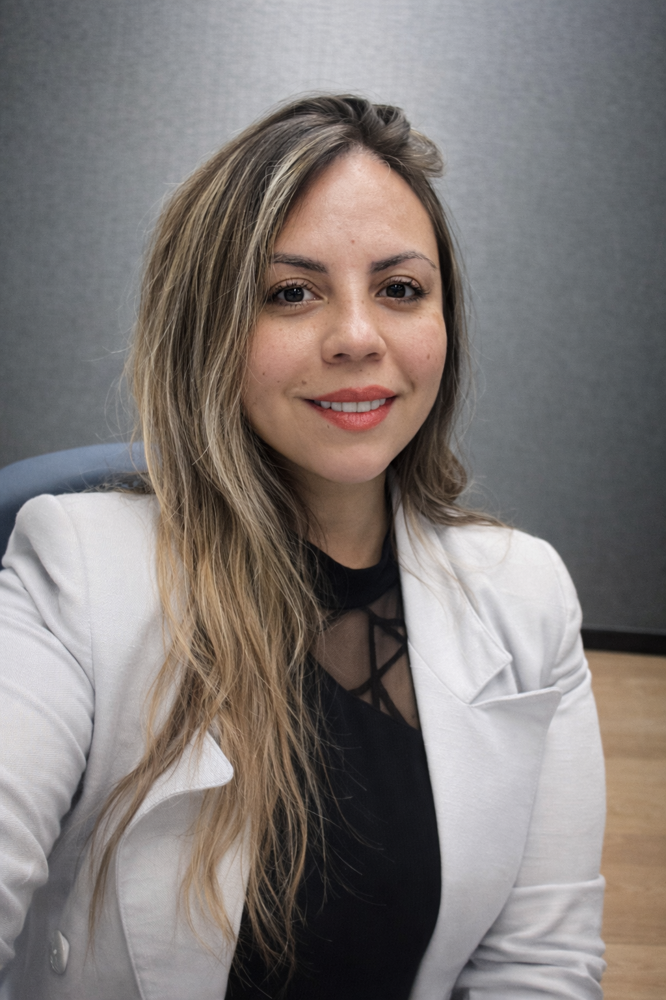

Asesoría especializada en Seguros de Vida con Ahorro, APV, Inversiones, Salud, Oncológico, Auto y Hogar.
WhatsAppAgenda en Calendly
El Ahorro Previsional Voluntario permite complementar la futura pensión y aprovechar beneficios tributarios.
Entrega bonificación estatal sobre los ahorros destinados a pensión y está orientado al crecimiento de largo plazo.
Permite rebajar la base imponible para contribuyentes afectos a impuesto a la renta, generando ahorro tributario.
Mi objetivo es ayudarte a tomar decisiones financieras informadas, proteger a tu familia y construir patrimonio mediante estrategias de ahorro, inversión y protección personalizadas.
📧 catalinapalmafritz@gmail.com
📱 +56 9 3628 7211